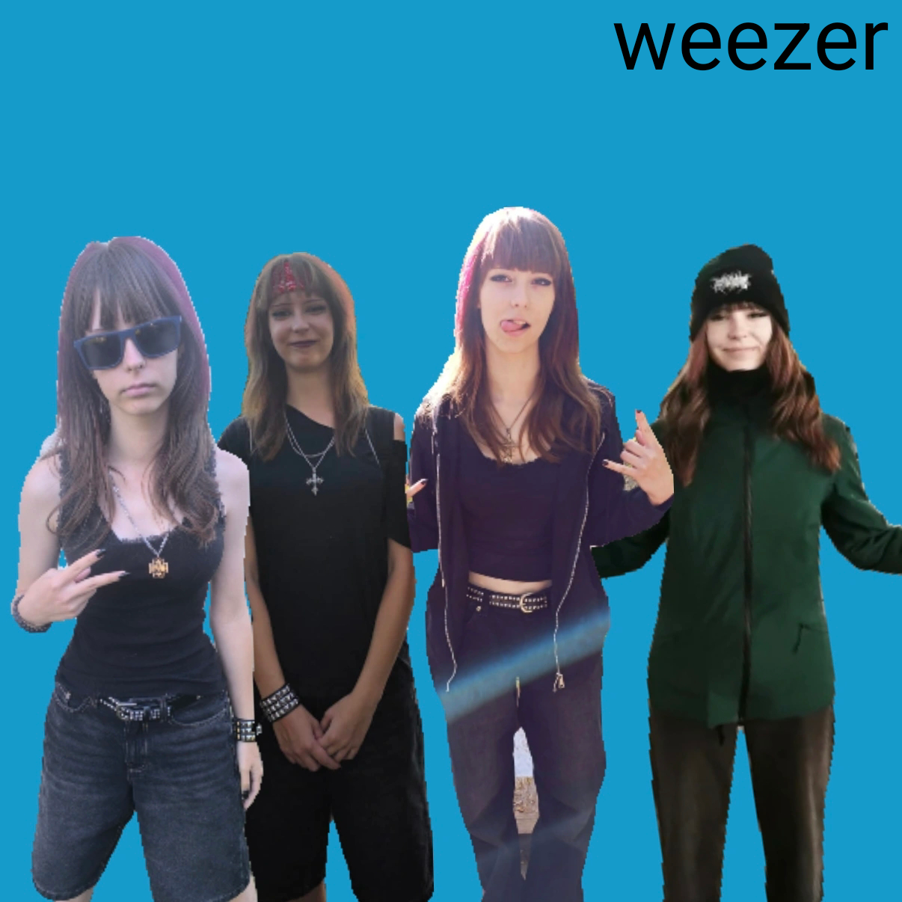
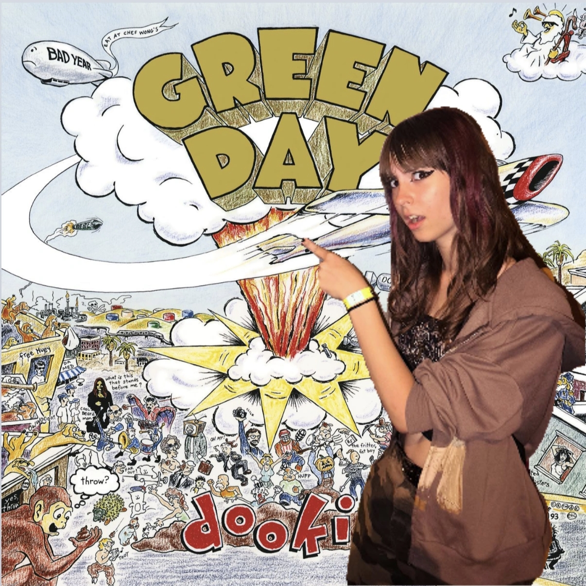
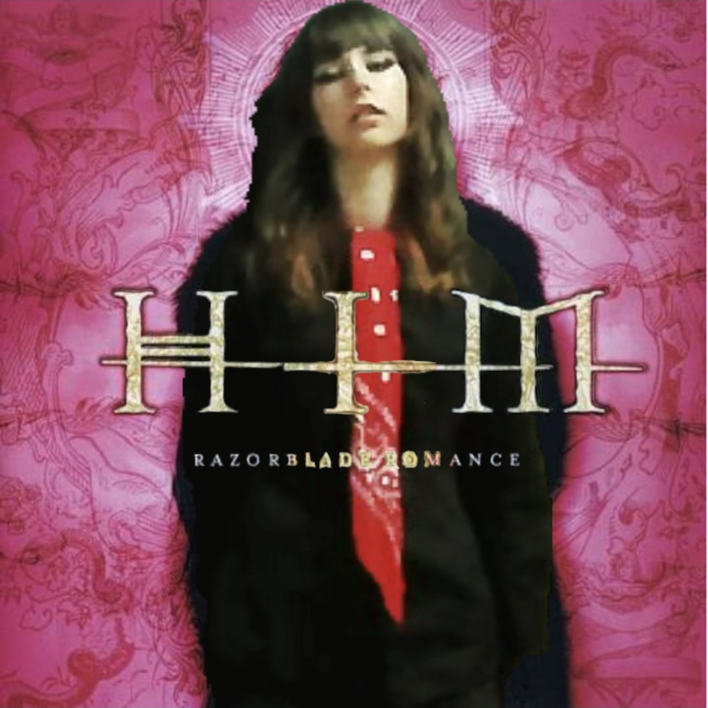

| Blue Maria | Dookie | HIM |
|---|---|---|
|
 Intro Say It Ain't So Kryptonite Hit Me With Your Best Shot Hump de Bump Bubble Pop Electric Rock Your Body Falling For You Passenger Don't Look Back in Anger Semi-Charmed Life The World Has Turned And Left Me Here Wrong Way Teenage Dirtbag Jason's Mom Hot in NY Dear Maria, Count Me In Why Don't You Get A Job Scotty Doesn't Know Lying Is the Most Fun... (i aint writing allat) Scar Tissue Holiday |
 Intro When I Come Around First Date A.D.I.D.A.S. Fat Lip Nothing On My Back Nookie Smooth Criminal Killing In The Name Twist Kickstart My Heart Bullet With Butterfly Wings In Throws of a Moral Quandary Who Was In My Room Last Night? What's up, people? Sulfur Panic Song DDevil Counterfeit Deutschland Geiger Counter Radioactivity |
 Intro Gone With The Sin This Night Has Opened My Eyes Friday I'm In Love Pictures Of You Cigarettes out the Window Weird Fishes / Arpeggi Heart-Shaped Box Rosemary There is a Light That Never Goes Out On Melancholy Hill Half Mast In My Life Today Rape Me Hey Judee I love you |